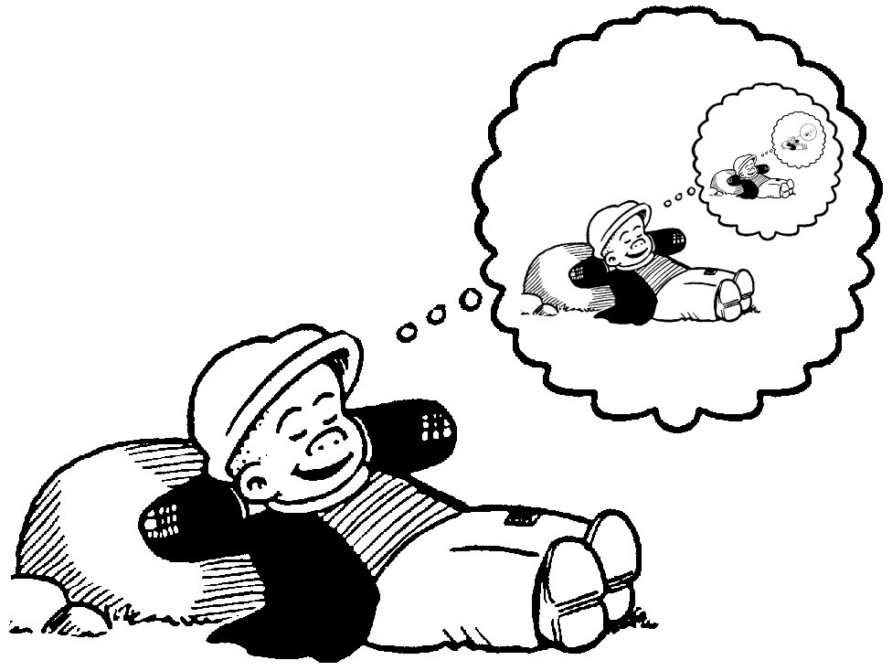

Phim inception xoắn não quăn tít

Inception – một bộ phim của Nolan được cho là “hack não người xem” với việc làm cho người xem liên tục sử dụng não để suy luận trong phim thì bộ phim xứng đáng để xem cho những ai yêu thích sức mạnh của suy luận.
Từ lâu, những bộ phim mang mác “hack não” luôn gây hấp dẫn đặc biệt cho mình, hơn nữa “hack não” + hành động thì vô cùng hấp dẫn. Nó như một chất gây nghiện mà khi dính vào rồi thì khó bỏ mà cứ càng ngày càng cần liều mạnh hơn =)) Nhân dịp mồng 2 tết 2019 ở nơi đất khách quê người không làm gì ngoài xem phim, mình đã tranh thủ xem Inception và nhân tiện viết review vì bộ phim rất hay.
Suy luận không chỉ đơn thuần mọi thứ phải đúng với thực tại như trong toán học 1+1 = 2. Mà ngoài ra suy luận trong một không gian tưởng tượng ra đó gọi là suy luận trong sự sáng tạo, đôi khi cũng có thể gọi là tào lao đối với những ai không thích sự tưởng tượng. Ví dụ như các bộ manga như Naruto, One piece chẳng hạn, nó gây nghiện bởi những thứ tưởng tượng trong cốt truyện nhưng lại vô cùng hợp lý về suy luận, các bộ skill của nhân vật có tính chất riêng, tương, khắc lẫn nhau dẫn đến những trận chiến mang tính chất xám nhiều mà đôi khi thắng thua không phải ở chỗ skill của ai có tính sát thương cao mà ở chỗ cách dùng skill của người đó như thế nào để tận dụng điểm yếu của đối phương. Nói ra ví dụ như thế để thấy đối với những người thích tưởng tượng thì suy luận trong sáng tạo không phải là thứ tào lao nhàm chán, mà là thứ tào lao vô cùng quyến rũ. Quay lại với Inception, đây là một bộ phim suy luận trong sự sáng tạo. Nếu ai chưa xem mình nghĩ nên xem trước rồi đọc review của mình sau để thử khả năng suy luận của bạn khi lần đầu xem phim, xem xong quay lại đọc review lại cũng chưa muộn nhé.
Đầu tiên là về sự sáng tạo trong phim. Inception khai thác thế giới trong mơ của con người mà tác giả sáng tạo thêm đó là: giữa hai người có thể “chia sẻ” giấc mơ với nhau và người ta có thể xây dựng thế giới trong mơ như ý muốn hoặc cấy thêm sự kiện vào trong giấc mơ. Hmm, có vẻ hơi khó hiểu phải không? Ta cùng từ từ làm rõ từng ý:
Chia sẻ giấc mơ giữa hai người hay nhiều người ở đây ý là hai hay nhiều người kết nối với nhau qua một cái máy và họ đồng thời cùng ngủ và cùng mơ, một người sẽ mơ giấc mơ của mình (owner) còn những người còn lại có thể xâm nhập vào giấc mơ của đó.
Trong giấc mơ, người chủ giấc mơ có thể sáng tạo ra mọi thứ trong thế giới đó, có thể bẻ cong trời đất hay tạo thêm những công trình, con người… trong khi đó người xâm nhập vào giấc mơ của người kia (owner) có thể lấy được cả thông tin của người đó trong quá khứ, đồng thời họ có thể cấy thêm các chi tiết vào trong giấc mơ của owner để họ tin rằng những thông tin đó là thật khi họ tỉnh dậy.
Inception là một khái niệm tiếng anh chỉ sự lồng vào nhau cái này trong cái kia theo kiểu đệ quy nhiều tầng. Inception ở bộ phim này ám chỉ mơ trong giấc mơ. Nếu mơ ở tầng 1 thì mơ trong giấc mơ ở tầng 2 và mơ trong giấc mơ của giấc mơ là tầng 3…
Khi càng đi sâu vào nhiều tầng thì thời gian càng dài hơn, tầng sâu hơn dài hơn khoảng 20 lần so với tầng trước đó. Ví dụ ở thực tế thời gian trôi 10 tiếng thì ở tầng 1 sẽ khoảng 200 tiếng (8 ngày 7 giờ), ở tầng 2 sẽ là 4000 tiếng (gần 6 tháng) và ở tầng 3 là 80000 tiếng (hơn 9 năm). Từ đây bạn có nghĩ sẽ tận dụng đặc điểm này để làm gì không? Nếu không hãy xem tiếp phần dưới xem các nhân vật chính đã tận dụng làm gì nhé? Điều đáng chú ý ở đây, càng đi sâu vào tầng ở dưới thì càng nguy hiểm và nếu để chết ở trong tầng sâu của giấc mơ thì có thể sẽ lạc vào thế giới hư không nào đó.
Để xác định mình có đang trong giấc mơ hay không thì phải sử dụng một vật gọi là tolem. Nhân vật chính sử dụng tolem là một con quay. Ở thế giới trong mơ, nơi mà trọng lực không như ở thế giới thật, con quay sẽ quay vô hạn mà không đổ.
Có một cách hơi mơ hồ để xác định mình đang mơ hay không là thử xem hiện tại của mình đến từ đâu. Thông thường khi mơ, ta không bao giờ biết được từ đâu mà đến, đâu là bắt đầu.
Người ở tầng này sẽ báo hiện cho người ở tầng trong bằng cách cho người ngoài nghe nhạc. Để đánh thức một người thì ta phải đánh thức từ tầng sâu nhất trở ra bằng cách cho nghe một bản nhạc rồi tạo một cú hích, có bao nhiêu tầng thì bấy nhiêu cú hích.
Đó là những khái niệm, định luật cơ bản mà tác giả đã sáng tạo ra. Những khái niệm hay quy luật đó nếu xảy ra thì vô cùng hợp lý phải không?
Tiếp theo, cùng điểm qua các nhân vật chính và cốt truyện đáng chú ý trong phim nhé: nhân vật chính là Cobb do Leonardo DiCaprio – tài tử HollyWood từng thủ vai Jack trong Titanic hay Jordan Belfort trong sói già phố wall, ngoài ra bạn của Cobb cũng là những tài tử điện ảnh khác ví dụ như anh chàng Venom đang hot gần đây…
Mở đầu phim Cobb được biết đến là một người chuyên nghiệp trong việc xâm nhập vào giấc mơ để đánh cắp thông tin và cấy thông tin vào người khác. Thế nhưng Cobb đang phải chạy trốn vì nghi án giết vợ mình!!! Vì thế mặc dù rất nhớ 2 con của mình nhưng anh không thể về nhà được. Cũng lúc này anh nhận được một phi vụ xâm nhập giấc mơ mà nếu thành công, anh được đảm bảo về với gia đình của mình mà không phải chạy trốn nữa. Đây cũng là phi vụ chính của phim. Cũng tại phi vụ này đã hé lộ nguyên nhân cái chết của cô vợ.
Cobb và bạn bè anh đã lên kế hoạch cho phi vụ của mình, mọi thứ diễn ra rất kịch tính, xét về tính hành động của phim thì mình đánh giá những cảnh quay hành động của phim rất ấn tượng, mặc dù những pha hành động đó diễn ra trong mơ. Tuy nhiên, như đã nói ở trên, định luật hấp dẫn trong mơ lại phụ thuộc vào đời thực hoặc phụ thuộc tầng phía trước. Do đó trong phim đã có những đoạn đánh nhau lơ lửng trong nhà rất thú vị =)) Kịch bản về phi vụ của Cobb cùng bạn bè cũng khá hay nhưng mình không đi sâu vào chi tiết. Ở đây mình muốn đi sâu vào chi tiết về thứ mà Cobb luôn giấu kín bạn bè, về nguyên nhân cái chết của người vợ mà anh vô cùng yêu quý.
Khi mà thế giới trong mơ dài hơn ngoài đời thực như vậy, thì Cobb đã có ý tưởng rằng cùng vợ mình đi sâu vào tầng 4 để sống cùng nhau đến già. Cả hai đã có với nhau những đứa con và sống đến già cõi trong mơ, một cuộc sống vô cùng hạnh phúc mà người vợ không muốn lìa xa. Đến một ngày Cobb muốn quay về với thế giới thực nên đã cấy vào đầu cô vợ ý tưởng rằng thế giới đang sống là giả, phải tự sát để về với thế giới thật. Cả 2 cùng nằm trên đường tàu đợi con tàu đến cán nát (đây cũng là lời giải thích cho hình ảnh con tàu chạy ở đầu phim). Cả hai cùng quay lại thế giới thực nhưng rồi điều không mong muốn xảy ra. Ý nghĩ phải tự sát để quay về thế giới thật trong đầu cô vợ vẫn chưa hết. Khi mà quá yêu cuộc sống trong thế giới mơ, cô vơ đã để lại tolem của mình trong thế giới đó, thì tại hiện thực, ý nghĩ trong đầu của cô vợ vẫn nghĩ rằng mình đang mơ. Dù cho Cobb có giải thích ra sao, thì cô vợ vẫn nghĩ là cần phải tự sát để quay về với thế giới thực. Rồi cuối cùng cô tự sát. Đó là nguyên nhân và cũng là điều làm Cobb hối tiếc. Anh luôn gặp vợ mình trong mọi giấc mơ của mình. Anh như muốn giam ký vợ mình trong mơ để cô ấy tiếp tục sống trong mơ với anh.
Những điểm cần suy nghĩ chưa rõ ràng (hoặc có thể khả năng của mình giới hạn chưa giải đáp được):
Thế giới hiện tại của Cobb là thật hay mơ? Khi mà cô vợ luôn nói thế giới hiện tại là mơ, Cobb cho là sai, nhưng làm sao chứng minh. Hơn nữa, ở cuối phim, khi Cobb được quay về gặp 2 cô con gái, anh đã thử quay tolem của mình. Con quay đó mãi không đổ!!!
Cảnh đầu phim cũng là cảnh kết thúc phim. Người cuối cùng trong giấc mơ mà Cobb gặp gỡ là một người đàn ông già cõi, vô cùng hối tiếng về cuộc đời. Cobb đến và nói với ông già rằng hãy cùng trở lại với thời trẻ trung. Phải chăng đấy lab Cobb??? No one knew?
Ở đời thực của ta, nếu tập cho mình ý niệm phân biệt có đang mơ hay không thì khi mơ liệu ta có thể áp dụng để biết mình đang mơ? Khi đang mơ mà biết mình đang mơ, liệu ta có thể tự tin làm được những điều ngu xuẩn? XD. Có bao giờ hai người cùng mơ một giấc mơ? Giá như có thể? Bạn sẽ muốn mơ cùng ai?